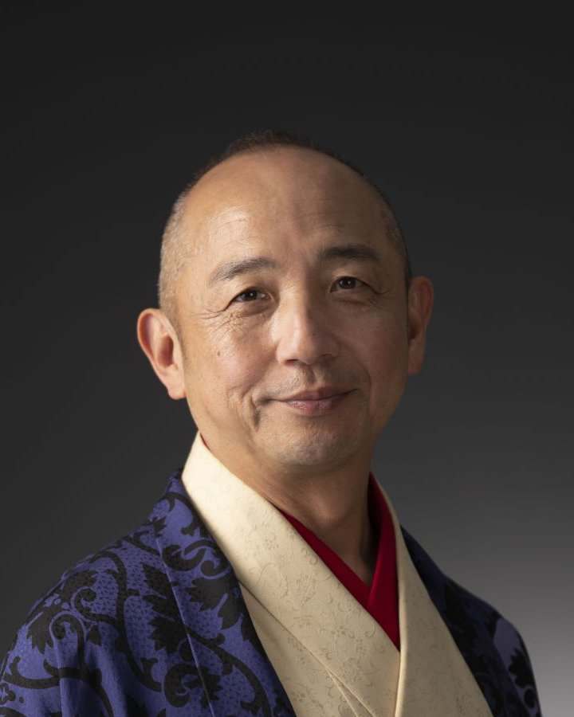

呉服屋。1962年京都生まれ。同志社大学法学部卒業。弁護士を目指して10年間司法試験に挑んだのち、33歳で着物の道へ。鳥取・島根で呉服店を営みながら、「着物を通じて、和の心を世界へ未来へ」をテーマに講演やラジオで発信している。著書に『君よ知るや着物の国』（幻冬舎）。
モットーは「着物を通じて、和の心を世界へ未来へ」。着物だけでなく、掃除、お茶、暮らしのしきたりなど、日本人が身近なものを通してみがいてきた心を、講演と文章で伝えている。講演では、マラソンや早起きなど、自身の習慣づくりの体験も語る。